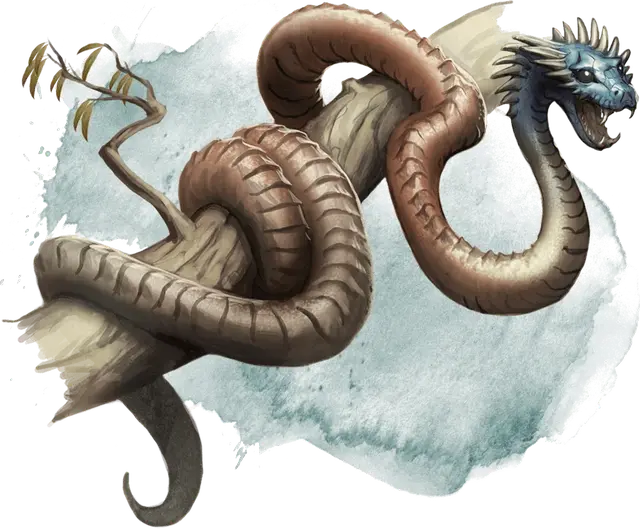

Джакули
Jaculi
Большой Зверь, без мировоззрения

Класс Доспеха 14 (природный доспех)
Хиты 16 (3к10)
Скорость 30 футов, лазая 20 футов
| мод | спас | ||
|---|---|---|---|
| СИЛ | 15 | +2 | +2 |
| ЛОВ | 14 | +2 | +2 |
| ТЕЛ | 11 | +0 | +0 |
| мод | спас | ||
|---|---|---|---|
| ИНТ | 2 | −4 | −4 |
| МДР | 8 | −1 | −1 |
| ХАР | 3 | −4 | −4 |
Навыки Атлетика +4, Восприятие +1, Скрытность +4
Чувства слепое зрение 30 футов, пассивное Восприятие 11
Опасность 1/2 (100 опыта)
Бонус мастерства +2
Особенности
Камуфляж. . Джакули совершает с преимуществом проверки Ловкости (Скрытность), когда собирается спрятаться.
Тонкий нюх. . Джакули совершает с преимуществом проверки Мудрости (Восприятие), полагающиеся на обоняние.
Действия
Укус. . Рукопашная атака оружием: +4 к попаданию, досягаемость 5 футов, одна цель. Попадание: 9 (2к6 + 2) колющего урона.
Скачок. . Джакули прыгает на расстояние до 30 футов по прямой линии и совершает атаку укусом по цели в пределах досягаемости. Эта атака имеет преимущество, если джакули прыгает не менее чем на 10 футов. Если атака попадёт, укус наносит дополнительно 7 (2к6) колющего урона.